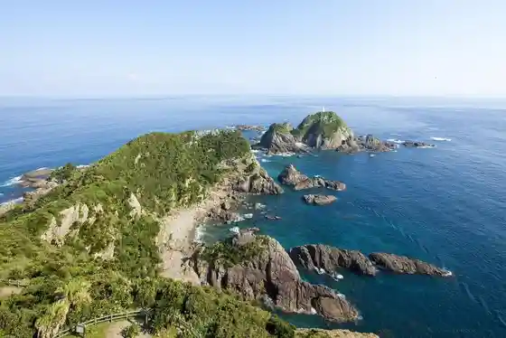
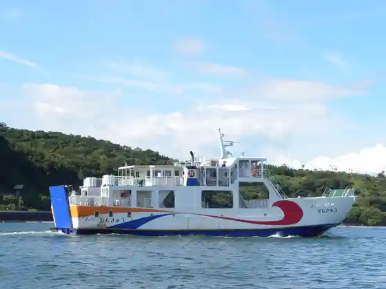
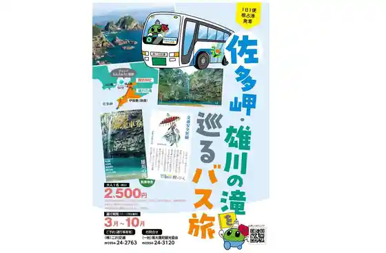

Ogawa Falls
Minamiosumi, Kagoshima · 0994-24-3115 · Official / source link
Sata Misaki Park
Minamiosumi, Kagoshima · 0994-27-3151 · Official / source link

Ferii Nankyu
Minamiosumi, Kagoshima · 0994-24-2531 · Official / source link

Sata Misaki Ogawa no Taki Wo Meguru Basu Tabi (Minamiosumi)
Minamiosumi, Kagoshima · Official / source link

Shokuji Tokoro Toki Umi (Kako Shima Ken Kimotsuki Gun Minamiosumi I Zashiki 3931-2)
Minamiosumi, Kagoshima · 0994-26-0663 · Official / source link
Suwa Shrine Heiritsu Torii
Minamiosumi, Kagoshima · 0994-24-3115 · Official / source link
Roadside Station Nejime
Minamiosumi, Kagoshima · 0994-24-5113 · Official / source link
Misaki Shrine
Minamiosumi, Kagoshima · 0994-24-3115 · Official / source link
Odomari Campground
Minamiosumi, Kagoshima · 0994-24-3115 · Official / source link
Minamiosumi Kanko Koryu Bussan Kan Nantan Market
Minamiosumi, Kagoshima · 0994-28-1866 · Official / source link
Pa no Rama Park Nishihara Dai
Minamiosumi, Kagoshima · 0994-24-3115 · Official / source link
Hama Shiri Coast Campground
Minamiosumi, Kagoshima · 0994-24-3115 · Official / source link
Gorudo Beach Ohama Beach
Minamiosumi, Kagoshima · 0994-24-3115 · Official / source link
Shokuji Tokoro Toki Umi (Kako Shima Ken Kimotsuki Gun Minamiosumi Sata I Zashiki 3931-2)
Minamiosumi, Kagoshima · 0994-26-0663 · Official / source link
Daiba Park
Minamiosumi, Kagoshima · 0994-24-3115 · Official / source link
Hana no Ki Nojo Resutoran
Minamiosumi, Kagoshima · 0994-24-4114 · Official / source link
Shokuji Tokoro Toki Umi (Kako Shima Ken Minamiosumi Sata I Zashiki 3931-2)
Minamiosumi, Kagoshima · 0994-26-0663 · Official / source link
Aqua Base Cafe
Minamiosumi, Kagoshima · 0994-24-3120 · Official / source link
Kuchu Tento Haku MAGICALSTAY2024
Minamiosumi, Kagoshima · 0994-24-3120 · Official / source link
Totsugawa Nojo
Minamiosumi, Kagoshima · 0994-24-5531 · Official / source link